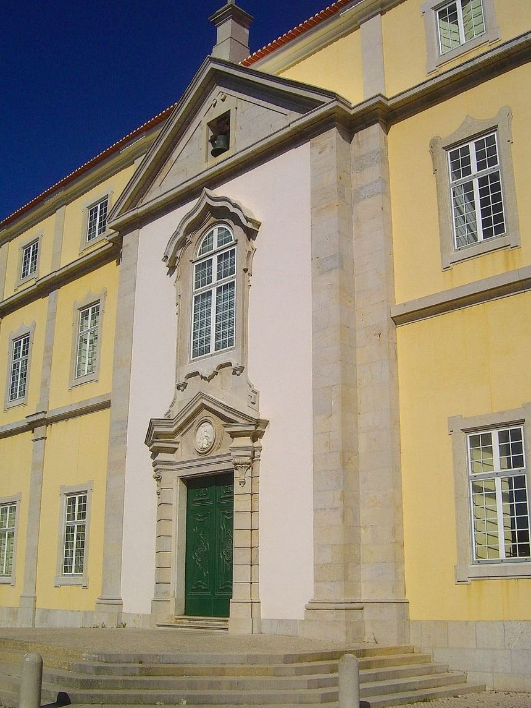

Ouvir antes de decidir
Assembleias semestrais abertas e um inquérito permanente, para que nenhuma decisão saia só da cabeça de cinco pessoas.
Não somos uma lista de promessas. Somos a Lista E às eleições da Associação de Estudantes do Externato de Penafirme: sessenta alunos que ouviram a escola e escreveram um programa a sério.
Dia de votaçãoLista E
29 de outubro de 2026
Na biblioteca, das 9h00 às 17h00. Leva o cartão de estudante.
As urnas estão abertas. Vai votar!
Eclipse total do Sol de 21 de agosto de 2017. Fotografia: NASA/Aubrey Gemignani, domínio público.
Dois vídeos curtos de apresentação: quem somos e o que queremos mudar, na voz de quem se candidata.
As pessoas, os valores e a forma como trabalhámos até aqui, em poucos minutos.
Os oito eixos e as vinte propostas do programa, explicados de forma rápida e direta.
Um eclipse alinha o céu e põe toda a gente a olhar para o mesmo ponto. É isso que falta à escola: um momento que junte turmas, anos e vontades.
Assembleias semestrais abertas e um inquérito permanente, para que nenhuma decisão saia só da cabeça de cinco pessoas.
Oito eixos com objetivos concretos, responsáveis definidos e calendário. Podes consultar cada um ao detalhe.
Sessenta alunos de anos diferentes, de toda a escola. Sem hierarquias que afastem, com responsabilidades que se assumem.
Contas da associação públicas no site, relatórios no fim de cada semestre e um canal direto para perguntas incómodas.
O programa tem oito eixos e vinte propostas. Começa pelo que te interessa a ti.
Eixo 01 · Representação
Tudo começa por ouvir. Este eixo garante que as decisões da associação passam pelos alunos antes de serem tomadas, e que todos sabem o que foi decidido.
Eixo 02 · Bem-estar
Notas importam, mas ninguém estuda bem quando não está bem. Este eixo cria espaços e apoio para cuidar de quem está cá dentro.
Eixo 03 · Cultura
A escola tem talento escondido em todas as turmas. Este eixo dá-lhe palco — sem precisar de ser o melhor, só de querer participar.
Eixo 04 · Desporto
Não só para quem já joga bem. Este eixo cria competição saudável entre turmas e condições condignas para quem representa a escola.
Eixo 05 · Academia
Apoio real ao estudo e ao futuro. Este eixo junta recursos que já existem — só que dispersos — e dá novas ferramentas para quem quer ir mais longe.
Eixo 06 · Ambiente
Cuidar do espaço onde passamos grande parte do dia. Este eixo torna a sustentabilidade visível — e não apenas uma palavra nos cartazes.
Eixo 07 · Comunidade
A escola não vive isolada. Este eixo liga-a à freguesia e ao concelho, e a quem mais precisa — sem protagonismos.
Eixo 08 · Digital
Informação dispersa é informação perdida. Este eixo concentra tudo num só lugar — e torna a associação transparente por defeito.

Percorremos as turmas todas com um inquérito anónimo. As principais preocupações dos alunos foram recolhidas e refletem-se nas propostas apresentadas.
Transformámos esses temas em oito eixos e vinte propostas, cada uma com um responsável e um prazo.
Assumimos publicamente o que fazemos no primeiro semestre, e apresentamos relatório no fim dele.
Representa a lista e responde pela associação.
Coordena os eixos e as ligações entre anos.
Atas, propostas e comunicação interna entre turmas.
Transparência nas contas e apoio à gestão de eventos.
Trabalhar para uma escola onde cada aluno se sente ouvido não é um slogan. É um compromisso que assumimos desde o início.
Cayden Elliott, candidato a presidente
Apresentação pública do programa, sessões nas turmas e o dia de votação a 29 de outubro de 2026.
Ver a agendaTens ideias ou queres ajudar na campanha? Escreve-nos. Todos os contributos contam.
Escrever à Eclipse29 de outubro de 2026 · Candidatura
Sessenta alunos, oito eixos e vinte propostas com prazos. A candidatura está entregue e a campanha começa agora.
Ler notíciaBiblioteca · 9h00–17h00 · Traz o cartão de estudante.
Auditório · 14h30 · Apresentação do programa e espaço para perguntas.
Pavilhão · Todo o dia · Inscrições por turma até 29 de outubro.
Pátio central · 10h00–13h00 · Convívio, jogos e conversa com a coordenação.
Lista E · Eclipse
Votar é a tua parte, e é num só dia: 29 de outubro de 2026, na biblioteca. Leva o cartão de estudante.